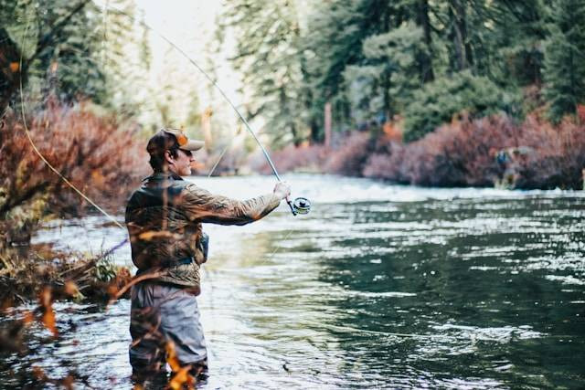
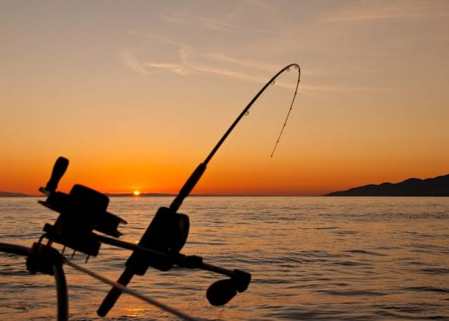
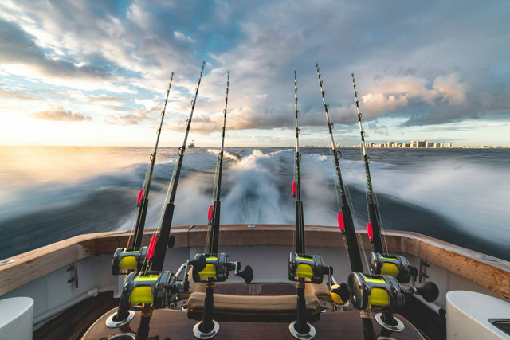

Tutorial Pemula
Cara Memancing di Kolam Pemancingan untuk Pemula
Panduan lengkap memilih joran, umpan, hingga teknik menghentakkan kail agar cepat strike.
Baca Panduan


Hal mendasar yang perlu disiapkan sebelum berangkat ke spot pemancingan favorit Anda.
Mancing adalah kegiatan menangkap ikan dengan menggunakan alat pancing. Kegiatan ini bisa dilakukan di berbagai tempat, seperti sungai, danau, laut, atau kolam. Mancing tidak hanya sekadar untuk mendapatkan ikan, tetapi juga sering dianggap sebagai hobi atau rekreasi yang menyenangkan.
Berikut merupakan beberapa syarat ketika Anda ingin memancing:
Berikut barang yang wajib Anda bawa:
Baca tips, ulasan spot, dan tutorial terbaik untuk meningkatkan pengalaman memancing Anda.
Apakah memancing termasuk olahraga? Pertanyaan ini banyak dibahas sebagian besar masyarakat, khususnya para penghobi.
Baca SelengkapnyaMancing merupakan kegiatan menyenangkan sekaligus bisa digunakan untuk mengisi waktu luang sambil melatih kesabaran.
Baca Selengkapnya
Pilihan kolam pemancingan murah, nyaman, dan populer di Semarang untuk dikunjungi saat akhir pekan.
Baca Selengkapnya